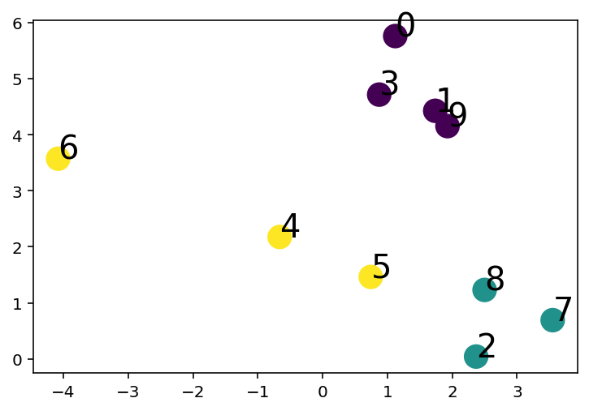
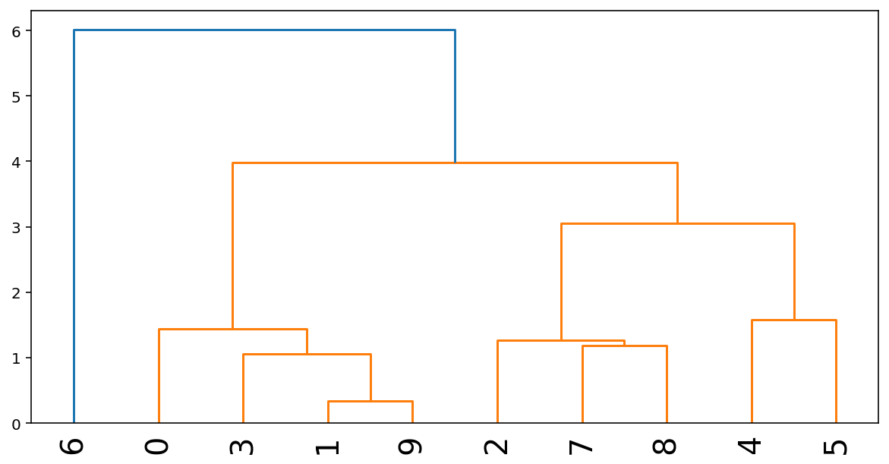
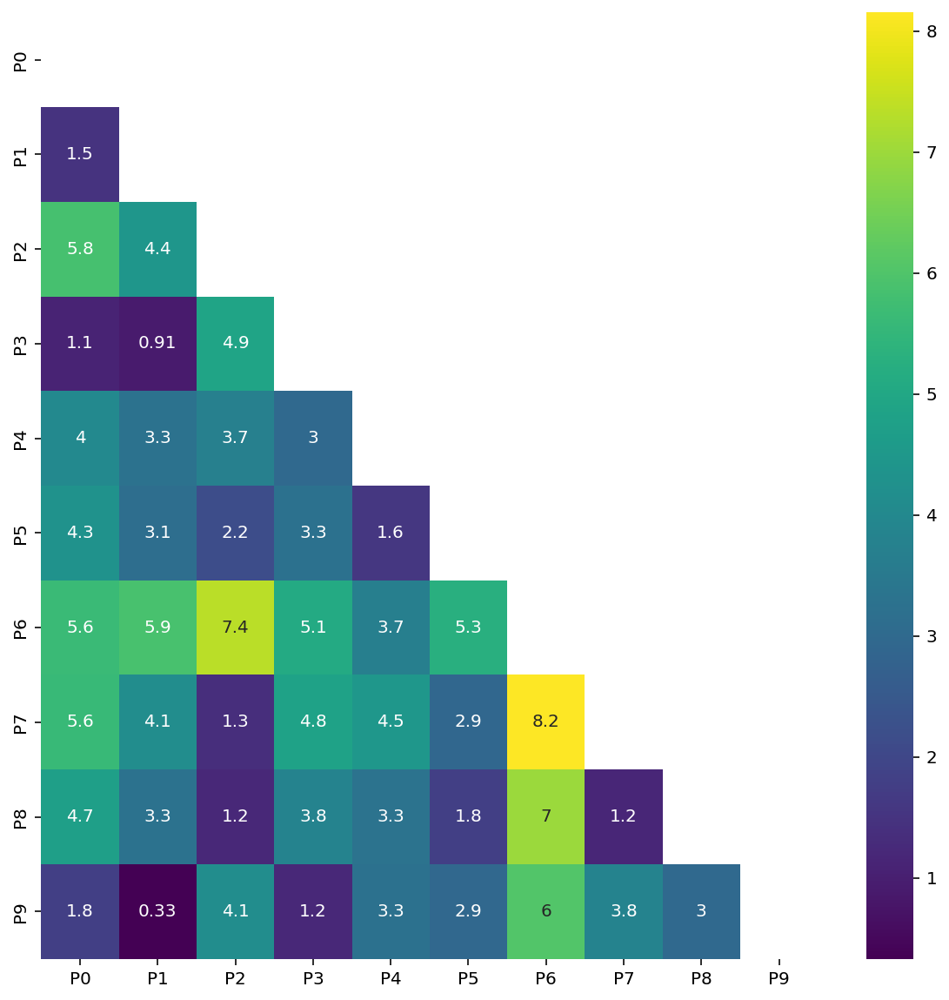
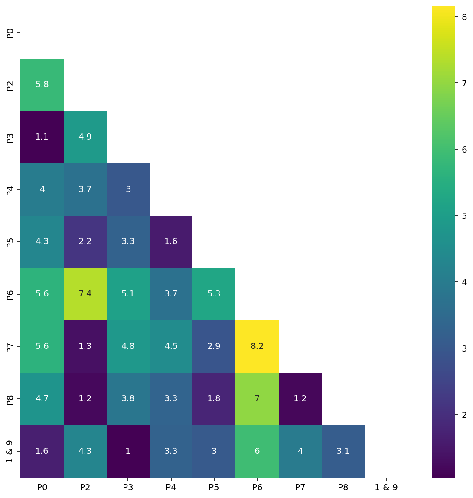

import numpy as np
import matplotlib.pyplot as plt
import pandas as pd
%matplotlib inline
%config InlineBackend.figure_format = 'retina'
from sklearn.datasets import make_blobs
from sklearn.cluster import KMeansHierarchical Clustering
Hierarchical Clustering
# Create a dataset with K_dataset clusters
K_dataset = 3
X, y = make_blobs(n_samples=10, centers=K_dataset, n_features=2, random_state=0)
plt.scatter(X[:, 0], X[:, 1], c=y, s=200, cmap='viridis')
# Annotate sample number
for i in range(X.shape[0]):
plt.annotate(i, (X[i, 0], X[i, 1]), fontsize=20)
# Show after 1 step of hierarchical clustering
from scipy.cluster.hierarchy import dendrogram, linkage
Z = linkage(X, 'average')
plt.figure(figsize=(10, 5))
dendrogram(Z, labels=range(X.shape[0]), leaf_rotation=90, leaf_font_size=20)
plt.show()
# Pairwise distance matrix
from scipy.spatial.distance import pdist, squareform
# Compute the distance matrix
dist = pdist(X, metric='euclidean')
dist = squareform(dist)
X_index = [f"P{x}" for x in np.arange(X.shape[0])]
df = pd.DataFrame(dist, index=X_index, columns=X_index)
df| P0 | P1 | P2 | P3 | P4 | P5 | P6 | P7 | P8 | P9 | |
|---|---|---|---|---|---|---|---|---|---|---|
| P0 | 0.000000 | 1.468503 | 5.849187 | 1.072565 | 4.001437 | 4.311101 | 5.641206 | 5.617833 | 4.732056 | 1.796596 |
| P1 | 1.468503 | 0.000000 | 4.427098 | 0.911272 | 3.289419 | 3.124431 | 5.879548 | 4.149512 | 3.283718 | 0.332095 |
| P2 | 5.849187 | 4.427098 | 0.000000 | 4.904326 | 3.705648 | 2.158345 | 7.350236 | 1.347556 | 1.194950 | 4.132565 |
| P3 | 1.072565 | 0.911272 | 4.904326 | 0.000000 | 2.966927 | 3.253476 | 5.083095 | 4.830950 | 3.843925 | 1.193839 |
| P4 | 4.001437 | 3.289419 | 3.705648 | 2.966927 | 0.000000 | 1.575484 | 3.691478 | 4.465344 | 3.299630 | 3.257210 |
| P5 | 4.311101 | 3.124431 | 2.158345 | 3.253476 | 1.575484 | 0.000000 | 5.263313 | 2.910477 | 1.771561 | 2.937847 |
| P6 | 5.641206 | 5.879548 | 7.350236 | 5.083095 | 3.691478 | 5.263313 | 0.000000 | 8.154381 | 6.982831 | 6.034281 |
| P7 | 5.617833 | 4.149512 | 1.347556 | 4.830950 | 4.465344 | 2.910477 | 8.154381 | 0.000000 | 1.180379 | 3.821671 |
| P8 | 4.732056 | 3.283718 | 1.194950 | 3.843925 | 3.299630 | 1.771561 | 6.982831 | 1.180379 | 0.000000 | 2.976718 |
| P9 | 1.796596 | 0.332095 | 4.132565 | 1.193839 | 3.257210 | 2.937847 | 6.034281 | 3.821671 | 2.976718 | 0.000000 |
import seaborn as sns
# use lower triangle of matrix
mask = np.zeros_like(dist, dtype=np.bool_)
mask[np.triu_indices_from(mask)] = True
plt.figure(figsize=(10, 10))
# Make heatmap with seaborn and mask, mentining column and row names
sns.heatmap(dist, mask=mask, xticklabels=X_index, yticklabels=X_index, annot=True, cmap='viridis')<AxesSubplot:>
# Combine closest clusters
# (i.e. the two clusters with the smallest distance)
# Find the two clusters with the smallest distance ignoring the diagonal
# (i.e. the distance between a cluster and itself)
np.fill_diagonal(dist, np.inf)
i, j= np.unravel_index(np.argmin(dist), dist.shape)
print(i, j)1 9# Combine the two clusters to a single "point"
X_new = np.vstack([X[i], X[j]])
new_point_name = f'{i} & {j}'
new_point_value = X_new.mean(axis=0)
print(new_point_name, new_point_value)
# Add new point to the dataset, remove the two old points
X = np.vstack([X, new_point_value])
X = np.delete(X, [i, j], axis=0)
print(X.shape)
#Update X_index to reflect the new point and the removed points
X_index = [f"P{x}" for x in range(10) if x not in [i, j]]
X_index.append(new_point_name)
# Compute the distance matrix
dist = pdist(X, metric='euclidean')
dist = squareform(dist)
df = pd.DataFrame(dist, index=X_index, columns=X_index)1 & 9 [1.83183315 4.28894623]
(9, 2)df| P0 | P2 | P3 | P4 | P5 | P6 | P7 | P8 | 1 & 9 | |
|---|---|---|---|---|---|---|---|---|---|
| P0 | 0.000000 | 5.849187 | 1.072565 | 4.001437 | 4.311101 | 5.641206 | 5.617833 | 4.732056 | 1.632347 |
| P2 | 5.849187 | 0.000000 | 4.904326 | 3.705648 | 2.158345 | 7.350236 | 1.347556 | 1.194950 | 4.279144 |
| P3 | 1.072565 | 4.904326 | 0.000000 | 2.966927 | 3.253476 | 5.083095 | 4.830950 | 3.843925 | 1.048934 |
| P4 | 4.001437 | 3.705648 | 2.966927 | 0.000000 | 1.575484 | 3.691478 | 4.465344 | 3.299630 | 3.269140 |
| P5 | 4.311101 | 2.158345 | 3.253476 | 1.575484 | 0.000000 | 5.263313 | 2.910477 | 1.771561 | 3.028025 |
| P6 | 5.641206 | 7.350236 | 5.083095 | 3.691478 | 5.263313 | 0.000000 | 8.154381 | 6.982831 | 5.955102 |
| P7 | 5.617833 | 1.347556 | 4.830950 | 4.465344 | 2.910477 | 8.154381 | 0.000000 | 1.180379 | 3.985504 |
| P8 | 4.732056 | 1.194950 | 3.843925 | 3.299630 | 1.771561 | 6.982831 | 1.180379 | 0.000000 | 3.129577 |
| 1 & 9 | 1.632347 | 4.279144 | 1.048934 | 3.269140 | 3.028025 | 5.955102 | 3.985504 | 3.129577 | 0.000000 |
mask = np.zeros_like(dist, dtype=np.bool_)
mask[np.triu_indices_from(mask)] = True
plt.figure(figsize=(10, 10))
# Make heatmap with seaborn and mask, mentining column and row names
sns.heatmap(dist, mask=mask, xticklabels=X_index, yticklabels=X_index, annot=True, cmap='viridis')<AxesSubplot:>